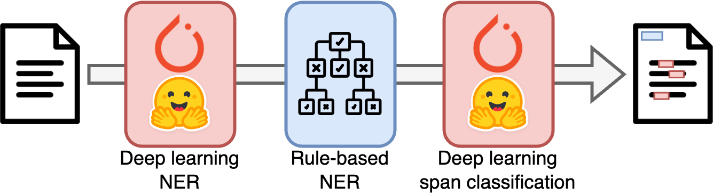

Pipeline[source]
The goal of EDS-NLP is to provide a framework for processing textual documents.
Processing textual documents, and clinical documents in particular, usually involves many steps such as tokenization, cleaning, named entity recognition, span classification, normalization, linking, etc. Organising these steps together, combining static and deep learning components, while remaining modular and efficient is a challenge. This is why EDS-NLP is built on top of a novel pipelining system.
Deep learning frameworks
Trainable components in EDS-NLP are built around the PyTorch framework. While you can use any technology in static components, we do not provide tools to train components built with other deep learning frameworks.
Compatibility with spaCy and PyTorch
While EDS-NLP is built on top of its own pipeline system, it is also designed to be compatible with the awesome spaCy framework. This means that you can use (non-trainable) EDS-NLP components in a spaCy pipeline, and vice-versa. Documents, objects that are passed through the pipeline, are in fact spaCy documents, and we borrow many of spaCy's method names and conventions to make the transition between the two libraries as smooth as possible.
Trainable components, on the other hand, are built on top of the PyTorch framework. This means that you can use PyTorch components in an EDS-NLP pipeline and benefit from the latest advances in deep learning research. For more information on PyTorch components, refer to the Torch component page.
Creating a pipeline
A pipeline is composed of multiple pipes, i.e., callable processing blocks, like a function, that apply a transformation on a Doc object, such as adding annotations, and return the modified object.
To create your first EDS-NLP pipeline, run the following code. We provide several ways to create a pipeline:
This is the recommended way to create a pipeline, as it allows auto-completion, type checking and introspection (you can click on the component or its arguments to see the documentation in most IDEs).
import edsnlp, edsnlp.pipes as eds
nlp = edsnlp.blank("eds")
nlp.add_pipe(eds.sentences())
nlp.add_pipe(eds.matcher(regex={"smoker": ["fume", "clope"]}))
nlp.add_pipe(eds.negation())
Curried components
Most components (like eds.matcher) require an nlp argument initialization. The above eds.matcher(regex={"smoker": ["fume", "clope"]}) actually returns a "curried" component, that will be instantiated when added to the pipeline. To create the actual component directly and use it outside of a pipeline (not recommended), you can use eds.matcher(nlp, regex={"smoker": ["fume", "clope"]}), or use the result of the nlp.add_pipe call.
Pipes can be dynamically added to the pipeline using the add_pipe method, with a string matching their factory name and an optional configuration dictionary.
import edsnlp # or import spacy
nlp = edsnlp.blank("eds") # or spacy.blank("eds")
nlp.add_pipe("eds.sentences")
nlp.add_pipe("eds.matcher", config=dict(regex={"smoker": ["fume", "clope"]}))
nlp.add_pipe("eds.negation")
You can also create a pipeline from a configuration file. This is useful when you plan on changing the pipeline configuration often.
nlp:
"@core": pipeline
lang: eds
components:
sentences:
"@factory": eds.sentences
matcher:
"@factory": eds.matcher
regex:
smoker: ["fume", "clope"]
negation:
"@factory": eds.negation
and then load the pipeline with:
import edsnlp
nlp = edsnlp.load("config.yml")
You can also create a pipeline from a configuration file. This is useful when you plan on changing the pipeline configuration often.
[nlp]
@core = "pipeline"
lang = "eds"
pipeline = ["sentences", "matcher", "negation"]
[components.sentences]
@factory = "eds.sentences"
[components.matcher]
@factory = "eds.matcher"
regex = {"smoker": ["fume", "clope"]}
[components.negation]
@factory = "eds.negation"
and then load the pipeline with:
import edsnlp
nlp = edsnlp.load("config.cfg")
This pipeline can then be run on one or more texts documents. As the pipeline process documents, components will be called in the order they were added to the pipeline.
from pathlib import Path
# Processing one document
nlp("Le patient ne fume pas")
# Processing multiple documents
nlp.pipe([text1, text2])
For more information on how to use the pipeline, refer to the Inference page.
Hybrid models
EDS-NLP was designed to facilitate the training and inference of hybrid models that arbitrarily chain static components or trained deep learning components. Static components are callable objects that take a Doc object as input, perform arbitrary transformations over the input, and return the modified object. Torch components, on the other hand, allow for deep learning operations to be performed on the Doc object and must be trained to be used.

Saving and loading a pipeline
Pipelines can be saved and loaded using the save and load methods. Following spaCy, the saved pipeline is not a pickled objet but a folder containing the config file, the weights and extra resources for each pipeline. Deep-learning parameters are saved with the safetensors library to avoid any security issue. This allows for easy inspection and modification of the pipeline, and avoids the execution of arbitrary code when loading a pipeline.
Sharing a pipeline
To share the pipeline and turn it into a pip installable package, you can use the package method, which will use or create a pyproject.toml file, fill it accordingly, and create a wheel file. At the moment, we only support the poetry package manager.
nlp.package(
name="your-package-name", # leave None to reuse name in pyproject.toml
version="0.0.1",
root_dir="path/to/project/root", # optional, to retrieve an existing pyproject.toml file
# if you don't have a pyproject.toml, you can provide the metadata here instead
metadata=dict(
authors="Firstname Lastname <your.email@domain.fr>",
description="A short description of your package",
),
)
This will create a wheel file in the root_dir/dist folder, which you can share and install with pip.